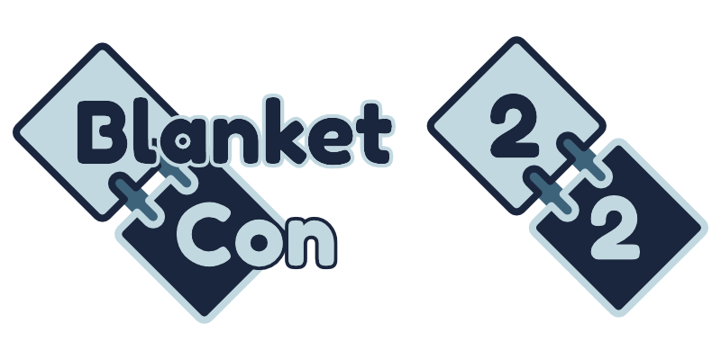
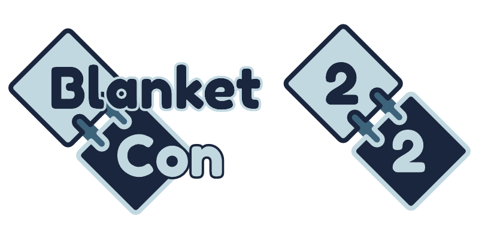
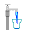

to (UTC)
BlanketCon is a new in-game Minecraft modding convention, hosted by ModFest and QuiltMC and open to all mod enthusiasts and developers! Come check out a custom modpack and convention world full of mods of all kinds - old favorites, new up-and-comers, hidden gems, and more! Inspired by BTM and powered by Quilt Loader on Minecraft 1.18.2, we're striving to create a fun, cozy, and silly atmosphere to celebrate Minecraft modding as a whole!
Featuring:
- A pack full of mods of all levels of notability!
- Panels, keynotes, and more from modders all across the Minecraft modding community and beyond!
- Booths, demos, games, and more showing off the creativity of our developers!
- A pink flamingo! Wait, how did that get in here?
Participate
The BlanketCon 22 modpack is NOW AVAILABLE! Both pack links are equivalent - if you don't know the difference, pick the Modrinth version!
The BlanketCon 22 server is now closed. You can access a world download here: BlanketCon 22.7z
Thank you all for visiting!
Recordings
A playlist of video recordings of BlanketCon 22 is available on YouTube.
If you have a video to add to this playlist, contact @LemmaEOF#2106 on Discord!
 Schedule
Schedule
BlanketCon 2022 is now finished. This list is kept here for historical purposes.
| Event | Type | Location | Time (UTC) | Hosts | Summary |
|---|---|---|---|---|---|
| Server Launch | Time to join in the world as we prepare the opening ceremony! | ||||
| Opening Ceremony | Ceremony | Main Stage | LemmaEOF | Come kick BlanketCon off with us as we say a few words about the community! | |
| Day 1 | |||||
| Quilt Developer Meeting: BlanketCon Edition | Panel/Q&A | Main Stage | Quilt Development Team | The Quilt development team holds a dev meeting live in-game at BlanketCon! | |
| What is Chasm? | Keynote | Main Stage | CheaterCodes, Earthcomputer | Quilt will use a custom backend for bytecode transformation libraries called "Chasm". This talk will desribe why Mixin isn't good enough, how Chasm works and how modders benefit from it. | |
| Ripping Off NEI for Fun and Profit: How to Do Graph Theory When You Don't Know Graph Theory | Keynote | Main Stage | Emi | A discussion of the technology behind EMI's recipe tree system, its related functionality, and all the problems that had to be solved. | |
| Deep Mod Interoperability: more than just not crashing | Keynote | Main Stage | Will BL | Why you should care about deep mod interoperability and best practices to allow it. | |
| Maintaining Botania for Forge and Fabric — Multiloader Experience Report | Keynote | Main Stage | Williewillus, Hubry, Alwinfy | The Botania maintainer(s) will briefly discuss their experience maintaining Botania on both Forge and Fabric. If you are a modder interested in maintaining a mod seamlessly across loaders, come and listen in! Players are welcome as well, you'll learn a bit more about what kind work goes into porting mods between loaders. | |
| Q&A with the Modrinth Team | Q&A | Main Stage | Modrinth Team | An open forum for questions to be answered by the people behind Modrinth, the open-source modding platform. Anything is fair game, whether it be current features or future features, including the API, website, modpacks, Theseus, and modder payouts. | |
| Worldgen Optimization: Going The Extra Mile | Keynote | Main Stage | Supercoder79 | A talk about worldgen, challenges faced when considering it, why it needs to be fast, and ways mod authors can keep this in mind while writing their mods. A portion will be focused on low level optimization, for mod devs interested in low level functions of the JVM. | |
| Day 2 | |||||
| Making nice art for mods | Panel | Main Stage | Kryppers, Reda, Gabb | Artists talking about their methods for making art, what they've done and advice on helping other people improve | |
| MultiLoader Madness | Panel + Q&A | Main Stage | Darkhax, Jared | Making mods for multiple loaders. An introduction and Q&A. | |
| Hexcasting: Writing a Mod With Lore | Keynote + Q&A | Main Stage | Petrak@ | How do you write a story for a Minecraft mod that isn't cheesy? | |
| The Art of Server-Side Development | Panel | Main Stage | Patbox, Potatoboy | A talk about server-side mod development by server-side developers, from technics and tricks to mod design. | |
| Nucleoid Let's Play | Minigame | Main Stage | Nucleoid team | A chance for people at the con to chill and play some of the Nucleoid minigames together! | |
| OpenGL, Minecraft, and Graphics | Keynote/Q&A | Main Stage | IMS | Showcase of OpenGL and Minecraft rendering, and going forward with mods. | |
| BlanketCon Build-Off: Judging | Minigame | TBD | Consistency+ team | Judging the BlanketCon Build-Off, a building competition judged by the Consistency+ Team and powered by Nucleoid! | |
| Big Finale | Ceremony | Main Stage | LemmaEOF | A few words to wrap up and send off BlanketCon 22! | |
 Booths
Booths
List may be subject to change - watch this space!
| Booth | Type | Author |
|---|---|---|
| Additional Banners | Mod | Darkhax |
| Allium | Mod | hugeblank, Patbox, BasiqueEvangelist |
| Arcanus 2 | Mod | Cammie, Will BL, MrSterner, ArathainFarqoe |
| Architecture Extensions | Mod | woodiertexas |
| Archon | Mod | Safro |
| Armor Stand Editor | Mod | Patbox |
| Aura | Mod | maximum, DrRubisco, Cart3r |
| Aurora's Decorations | Mod | LambdAurora |
| Automobility | Mod | FoundationGames |
| Bagel's Baking | Mod | hugeblank, Aye, Solcat, Koritsi, ChocolateFrog18 |
| Bewitchment | Mod | Bewitchment Team |
| Bewitchment Plus | Mod/Addon | MrSterner |
| Bing Bing Wahoo | Mod | Tropheus Jay, Soggy Cereal |
| Bits and Chisels | Mod | ThatTrollzer |
| Botania | Mod | Vazkii, Williewillus, Hubry, Alwinfy |
| Build Battle | Mod/Minigame | NucleoidMC |
| Campanion | Mod | Terraformers |
| CardStock | Mod | repulica |
| Chromatic Currents | Mod | Fusion Flux |
| ComputerCraft: Prometheus | Mod/Addon | SquidDev |
| ComputerCraft: Restitched | Mod | Merith, Patbox, SquidDev |
| Chocolate Bar | Mod | woodiertexas |
| Consistency+ | Mod | Cart3r, Tropheus Jay, Siuol |
| Create | Mod | Create Fabric Team |
| Culinaire | Mod | Dawn Team |
| Dark Paintings | Mod | Darkhax |
| Dark Utilities | Mod | Darkhax |
| Decorative | Mod | Motschen |
| Destroy The Monument | Mod/Minigame | NucleoidMC |
| Double Jump Attribute | Mod | Amy |
| Dyeable Fishing Lines | Mod | Fusion Flux |
| Ears | Mod | unascribed |
| Ecotones | Mod | Supercoder79 |
| EMI | Mod | Emi |
| Enchancement | Mod | MoriyaShiine |
| Endermantic Overhaul | Mod | anonym123 |
| Extended Drawers | Mod | MattiDragon |
| Fabulously Optimized | Modpack | robotkoer |
| Flamingo | Mod | copygirl, Vexatos |
| Flowery Structures | Mod | JustAnUmbreon |
| Flying Fluxery | Mod | Fusion Flux, SailKite, Something Shard, Whangd00dle |
| Fortress | Mod/Minigame | NucleoidMC |
| Fusion's Grapples | Mod | Fusion Flux |
| Galaxies: Parzi's Star Wars Mod | Mod | PSWG Team |
| Get Off My Lawn ReServed | Mod | Patbox, Draylar |
| Guard Villagers | Mod | MrSterner |
| Haema | Mod | Will BL |
| Halfdoors | Mod | Amy |
| Hex Casting | Mod | Petrak@, Alwinfy, Wiresegal |
| Hip Hoppers | Mod | Fusion Flux |
| Icy Incitement | Mod | Amy |
| Incorporeal 3 | Mod | quat, Artemis System |
| Inspecio | Mod | LambdAurora, Emi |
| Iris | Mod | IMS |
| Jamtastic | Mod | jamalam |
| Kiln | Mod | LemmaEOF, ZestyBlaze, BluKat |
| Lovely Snails | Mod | LambdAurora |
| Matchbox | Mod | Sunroses |
| Mbembe | Mod | ArathainFarqoe, Mango, Coolrex, Ninni, Zae |
| Milk+ | Mod | Tropheus Jay |
| Now Playing | Mod | AppleTheGolden |
| Overweight Farming | Mod | MrSterner |
| Oxidized | Mod | Safro |
| Packages | Mod | quat |
| Pehkui | Mod/Library | Virtuoel |
| Pettable Bees | Mod | Fusion Flux |
| Phonos | Mod | FoundationGames |
| Picture Sign | Mod | Motschen |
| Pig Pen Cipher | Resource Pack | Darkhax |
| Player Pronouns | Mod | Ash |
| Peculiar Pieces | Mod | Amy |
| Polaroid Camera | Mod | Pigeon |
| PolyMc | Mod | TheEpicBlock |
| Portal Cubed | Mod | Portal Cubed team |
| Promenade | Mod | Dawn Team |
| Purpeille | Mod | acikek, VirtuaLilith, Trudle, Jeb_Kerm |
| qCraft: Reimagined | Mod | acikek, VirtuaLilith |
| Quakecraft | Mod/Minigame | NucleoidMC |
| Quark | Mod | wiresegal, Vazkii |
| Reaping Mod | Mod | jamalam |
| Recordable | Mod | burger |
| Resounding | Mod | DrRubisco, iceGiant |
| Riptide Rush | Map | Amy |
| Runelic | Resource Pack | Darkhax |
| Sandwichable | Mod | FoundationGames |
| Simple Crates | Mod | Sunroses |
| Simple Villagers | Mod | samo_lego |
| Skywars | Mod/Minigame | NucleoidMC |
| SpaceFactory | Mod | Reoseah |
| Soul Ice | Mod | Siuol |
| TaterCart | Mod | Patbox |
| Taterzens | Mod | samo_lego |
| Terracraft | Mod | SimplyCmd, RiverOaken |
| TerrariaMod | Mod | Ryorama, Realz, Kelvin, Cepheus |
| This Rocks! | Mod | Motschen |
| Transpositioners | Mod | Kneelawk |
| Tree Hollows | Mod | Reoseah |
| UltimateHUD | Mod | XanderStuff |
| Visible Barriers | Mod | Amy |
| Visual Overhaul | Mod | Motschen |
| Wired Redstone | Mod | Kneelawk |
| Witherite Plus | Mod | Octal |
| XP Share | Mod | Sunroses |
| YUNG's Better Desert Temples | Mod | YUNGNICKYOUNG |
 Credits
Credits
ModFest is run by LemmaEOF, Prospector, Pyrrha, and 2XSaiko.
Quilt is run by the Quilt project.
The BlanketCon server was hosted by Capitol Hosting Solutions.
Background art and music from Yuru Camp.
Gifs provided by GifCities.
This event is in no way associated with or endorsed by Mojang or Microsoft.